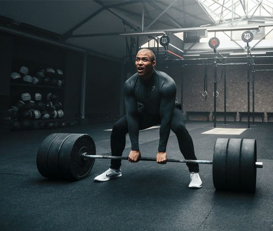

Atividade Física
Importância de fazer atividade física
A pratica regular de determinada atividade física reduz substancialmente o risco de morrer de doença cardíaca coronária e diminui o risco de infarto, câncer de cólon, diabetes e pressão alta entre outras doenças.
Sabe-se que pessoas de todas as idades, que estão de um modo geral inativas fisicamente, podem melhorar sua idade e bem estar ao praticar atividade física moderada regularmente.
Alguns itens considerados positivos durante tal pratica podem ser notados como: Ajuda a controlar o peso corporal: contribui para ossos,articulações e músculos sadio: reduz o índice de quedas em idosos:
Ajuda a aliviar a dor da artrite, artrose. Diminui os sintomas da ansiedade e depressão e estão associadas a menor numero de hospitalizações,visitas medicas e medicações;
Proporciona maior independência e autonomia para o idoso .

Para as pessoas inativas, que optam pela falta de atividade física, definitivamente não estão ajudando sua saúde e provavelmente a estão prejudicando.
Quanto mais examinamos os riscos para a saúde associados a falta de atividade física.mais convencidos ficamos que pessoas que não praticam atividade física devem começar a se exercitar.